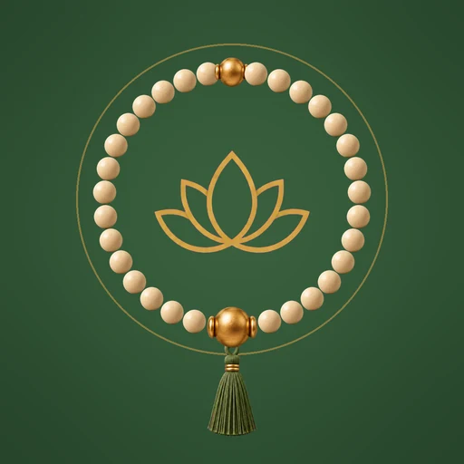
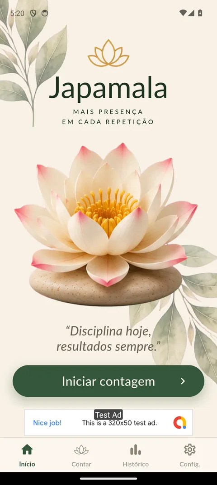
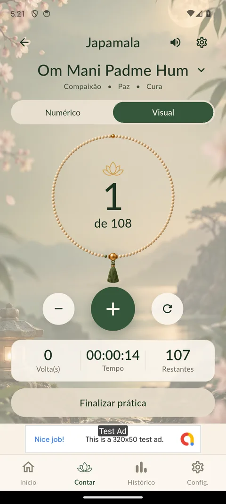
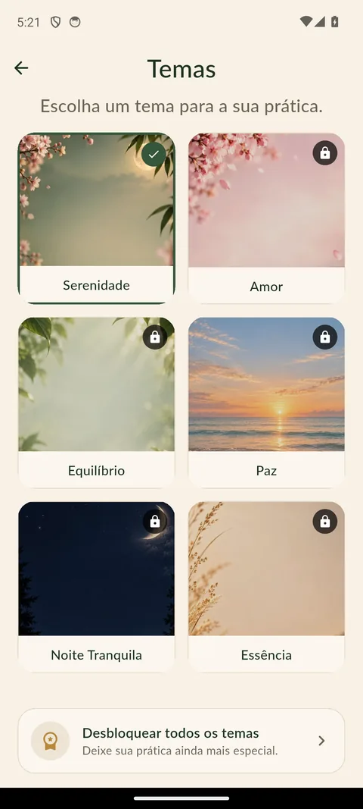
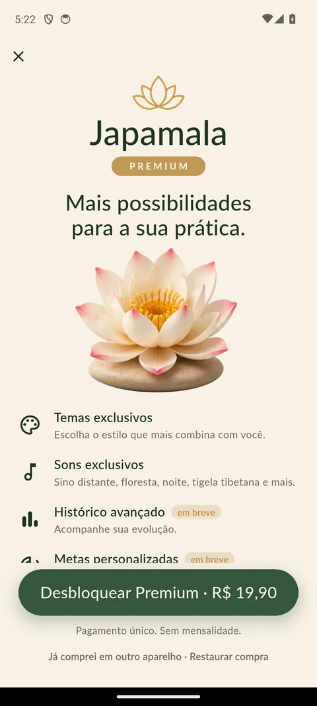
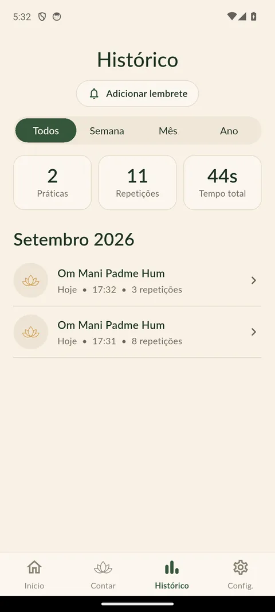
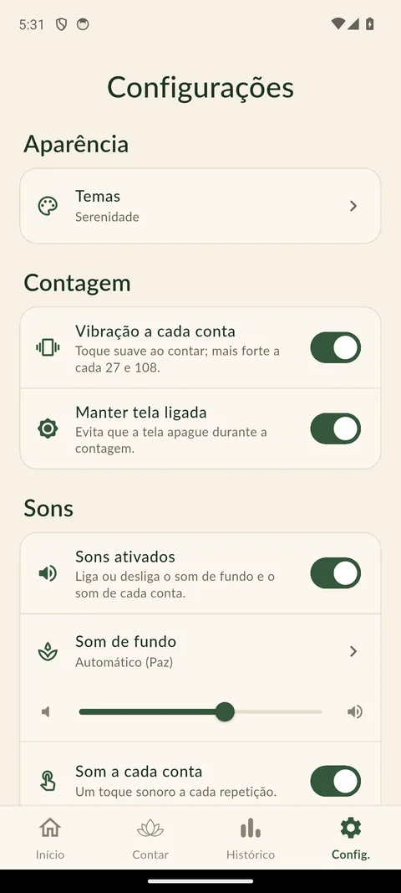

Mais presença em cada repetição
Um contador de mantras inspirado no colar de 108 contas, para praticar com calma e acompanhar sua jornada.
O japamala é o colar de 108 contas usado para contar as repetições de um mantra. O app traz essa prática para o celular: você conta cada repetição com um toque, vê o colar se preencher conta a conta e guarda o histórico das suas práticas — sem pressa e sem distrações.
Dois modos de contagem
Numérico, com o número grande e claro, ou visual, com o colar de 108 contas.
O motivo da sua prática
Escolha entre Om Mani Padme Hum, Gratidão e Autocuidado, ou crie a sua.
Histórico
Acompanhe suas práticas por semana, mês ou ano: repetições, voltas e tempo.
Sons para praticar
Som de fundo relaxante e um toque suave a cada conta, que você pode ajustar ou desligar.
Suas práticas ficam com você
O histórico é guardado no seu aparelho, sem precisar criar conta.
Para Android e iOS
Um só app, com o mesmo visual sereno nos dois sistemas.





